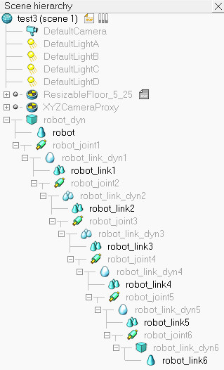
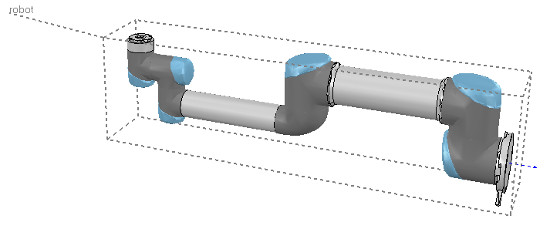
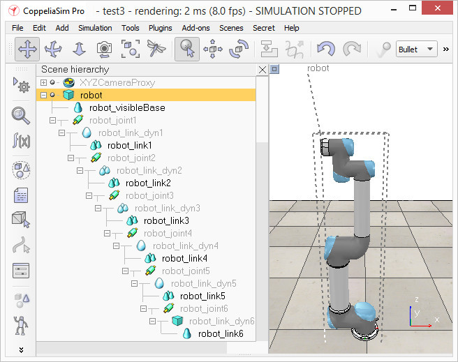

week10-14 <<
Previous Next >> 期末報告
week15-18
week15
學員學習成果回報考試
week16
越野車初步設計
完成設計並轉檔後分別轉入v-rep和webots，個別轉出ttt 檔案和wbt 檔案跟solvespace的零組件一起放入倉儲的download中
week17
任務一:V-rep教材翻譯解析
模型定義
我們從建立模型層次結構開始：通過選擇robot_link_dyn6，然後控制選擇robot_joint6，然後選擇
[Menu bar --> Edit --> Make last selected object parent，將最後一個動態機器人鏈接
（robot_link_dyn6）附加到其相應的關節（robot_joint6）]。
我們也可以做這一步通過簡單的拖動對象robot_link_dyn6到robot_link6在場景層次。
現在，我們將robot_joint6附加到robot_link_dyn5上，依此類推，直到到達機器人的底部。
現在，我們具有以下場景層次結構：

為模型庫起一個簡單的名字是很好而且更合乎邏輯的，因為模型庫也將代表模型本身。
因此，我們將robot重命名為robot_visibleBase，並將robot_dyn重命名為robot。
現在，我們選擇層次結構樹的基礎（i.e. object robot)，並在對象公共屬性中啟用“ 對象為模型基礎”。
我們還使對象/模型可以轉移或接受DNA。出現了一個邊界框，包圍了整個機器人。
但是，邊界框似乎太大：這是因為邊界框還包含不可見的項，例如關節。
現在，通過對所有關節啟用“不顯示為內部模型”選擇項，將關節從模型邊界框中排除。
我們可以對模型中的所有不可見項執行相同的過程。這也是一個有用的選項，可以將大型傳感器或其他項目也排除在模型邊界框之外。
我們現在有以下情況：

我們保護模型免受意外修改。我們選擇機器人中所有可見的物件，然後啟用“ 選擇模型的基礎 "：
如果現在點擊場景中的可見鏈接，則會改為選擇機器人的基礎。這使我們可以像對待單個對像一樣操作模型。
我們仍然可以通過按住Shift鍵並單擊場景或在場景層次中選擇對象來選擇機器人中的可見對象。
現在，我們將機器人置於正確的默認位置/方向。首先，我們將當前場景保存為參考（例如，如果稍後需要在當前機器人上導入具有相同方向的CAD數據）。
然後我們選擇模型並修改其位置/方向適當地。將模型（即其基礎物件）放置在X = 0和Y = 0處被認為是一種好習慣。

任務二
week10-14 <<
Previous Next >> 期末報告